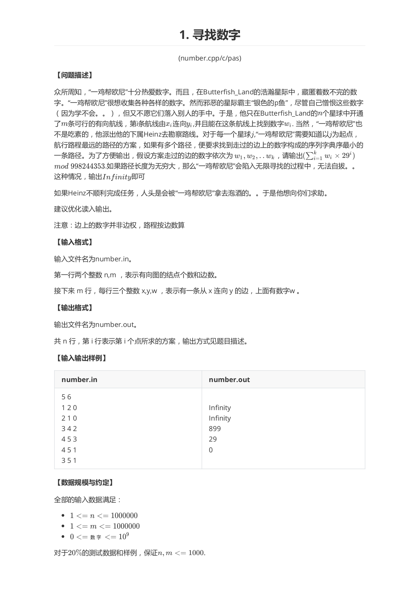
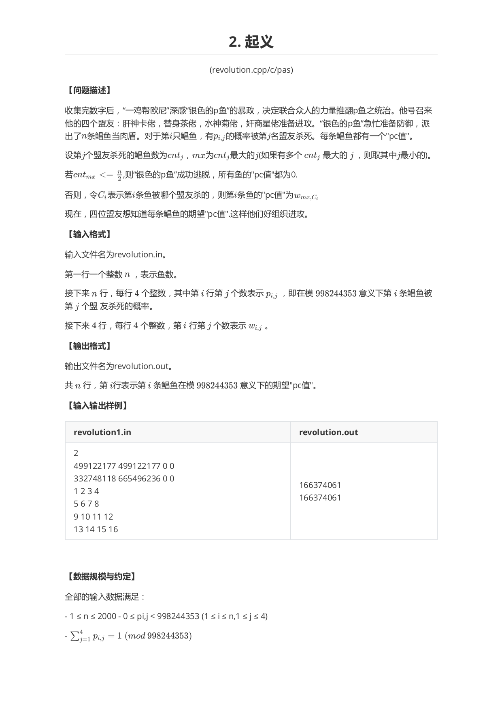

听说这是一道签到题。 但是我实在是太菜了。 考虑暴力做法，即用tarjan缩完点之后，直接跑DAG。虽然加上YKW剪枝可以过。但是我们仔细分析，发现这种DAG或树上找不同的比较问题可以直接用倍增搞，碰到不同之后，比较大小。 看来做题真的需要积累啊。

这道题目难度是真的大。看到题目，无从下手。不能解决就枚举。所以我们枚举 ，用一些比较巧妙的方法，我们采用考虑除当前点之外的点的概率，用类似与背包的方式转移。 使用表示1～i的鱼中死j个鱼的概率（被当前mx杀死），用表示i～n的鱼中死j个鱼的概率。 最后根据概率算期望。看看代码：
x#include<iostream>const int N = 2000 + 3;const int F = 5;typedef long long i64;inline int read(){ int s = 0,f = 1; char ch; while(!isdigit(ch = getchar())) if(ch == '-') f = -1; while(isdigit(ch)) s = s * 10 + ch - '0',ch = getchar(); return s * f;}const i64 MOD = 998244353;i64 f[N][N],g[N][N],p[N][F],w[F][F];i64 ans[N];int n;/*f:prefix,g:suffix*//*w[max][C];*//*p[i][who]*/inline int mod(i64 x) {return (x % MOD + MOD) % MOD;}inline void init(){ for(int i = 0;i <= n + 1;i++) for(int j = 0;j <= n + 1;j++) f[i][j] = g[i][j] = 0;}#define __f(i,begin,end) for(int i = begin;i <= end;i++)#define __df(i,end,begin) for(int i = end;i >= begin;i--)inline void dp(int max){ f[0][0] = 1; __f(i,1,n) __f(j,0,i) /*i:枚举第几条鱼*/ /*j:枚举死几个* */ { f[i][j] = 1ll * f[i - 1][j] * mod(1 - p[i][max]) % MOD; if(j) f[i][j] = (1ll * f[i][j] + f[i - 1][j - 1] * p[i][max] % MOD) % MOD; } g[n + 1][0] = 1; __df(i,n,1) __f(j,0,n - i +1) /*同上*/ { g[i][j] = 1ll * g[i + 1][j] * mod(1 - p[i][max]) % MOD; if(j) g[i][j] = (1ll * g[i][j] + g[i + 1][j - 1] * p[i][max] % MOD) % MOD; } /*后缀和*/ __f(i,1,n) __df(j,n - i,0) g[i][j] = (1ll * g[i][j] + g[i][j + 1]) % MOD;}int main(){ freopen("revolution.in","r",stdin); freopen("revolution.out","w",stdout); n = read(); for(int i = 1;i <= n;i++) for(int j = 1;j <= 4;j++) p[i][j] = read(); for(int i = 1;i <= 4;i++) for(int j = 1;j <= 4;j++) w[i][j] = read(); for(int max = 1;max <= 4;max++) { /*枚举杀人最多的神佬*/ init(); dp(max); /*i:第几条鱼;j：位置小于i的死鱼个数;k杀i的神佬*/ __f(i,1,n) __f(j,0,i - 1) __f(k,1,4) (ans[i] += 1ll * f[i - 1][j] * w[max][k] % MOD * p[i][k] % MOD * g[i + 1][std::max(0,(n >> 1) - j - (max == k) + 1)] % MOD) %= MOD; } for(int i = 1;i <= n;i++) printf("%lld\n",ans[i]); exit(0); }实在难啊.